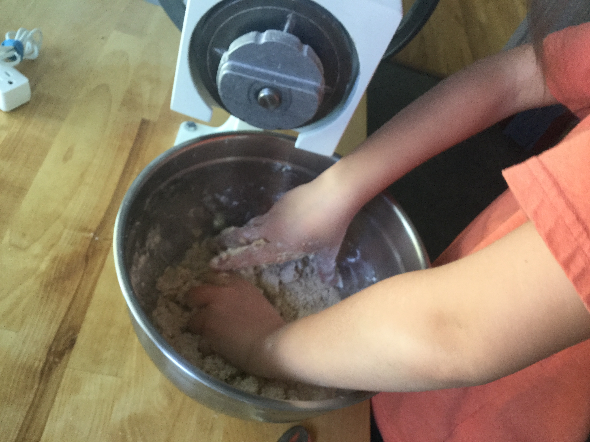
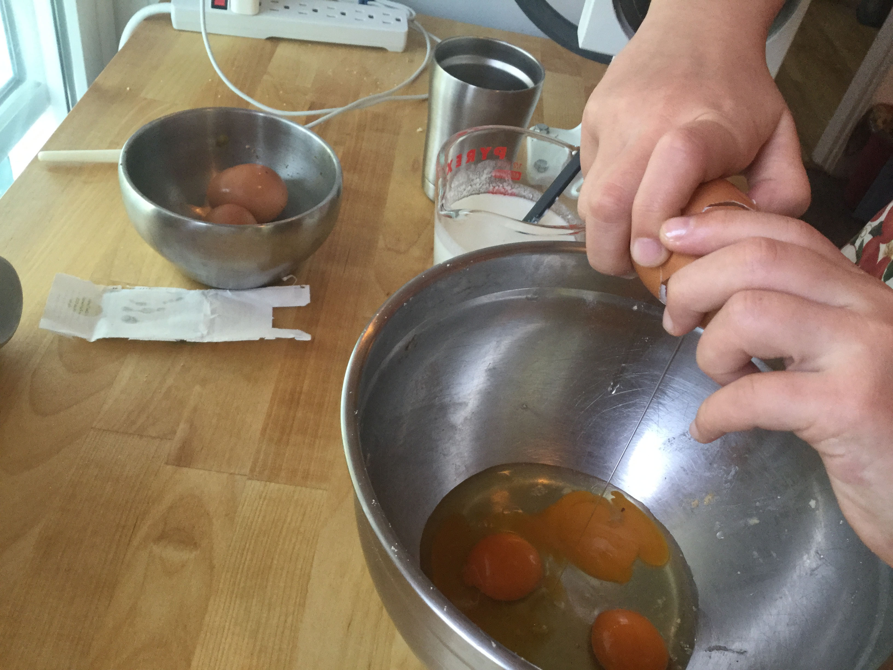
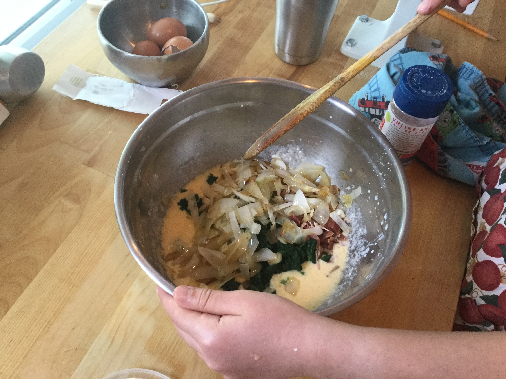
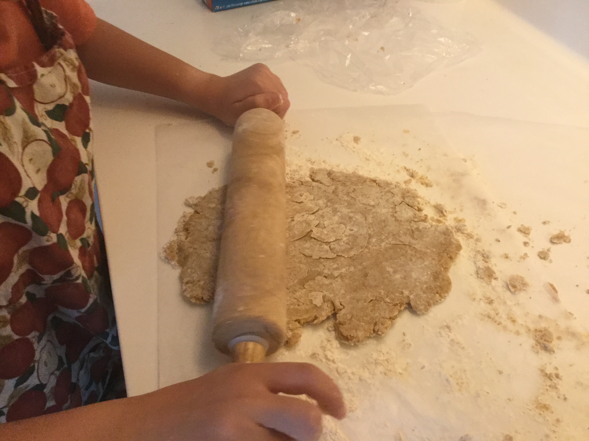
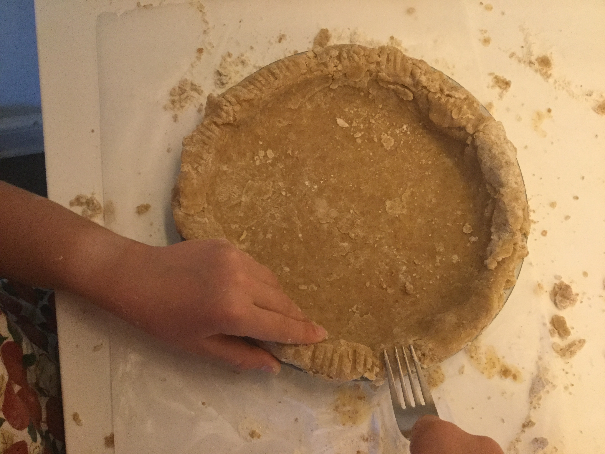
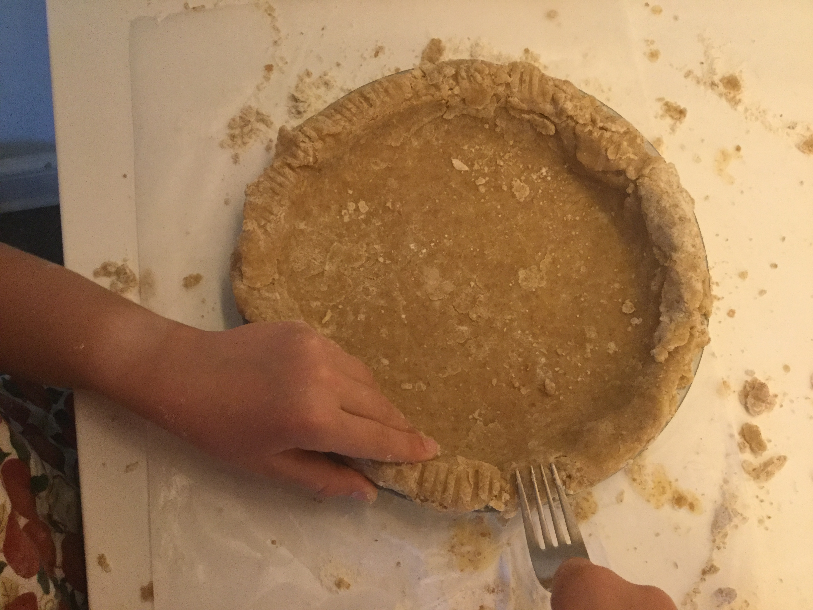
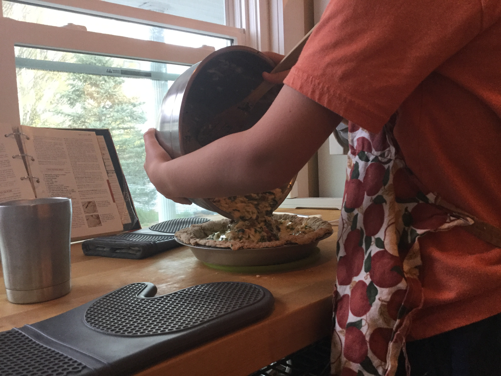
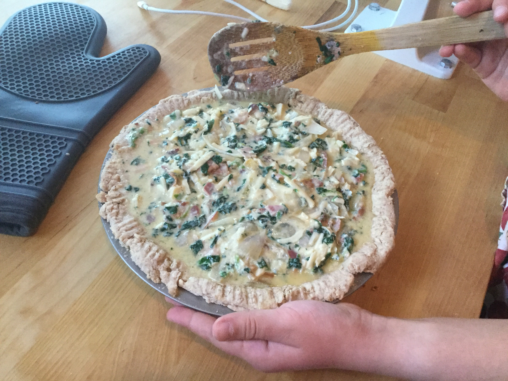
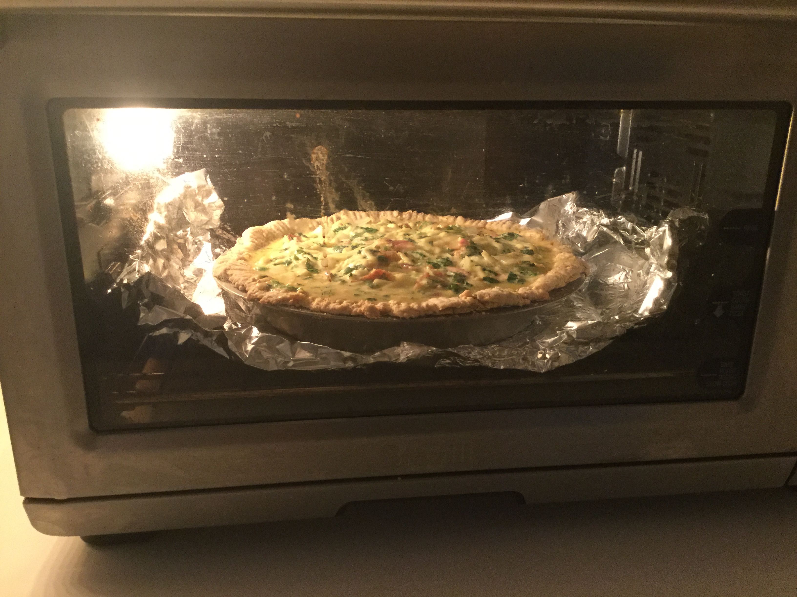

First, you make the dough by mixing the butter and flour with your hands, then adding water. When you are finished, shape the crust into a ball and put it in the fridge.
Next, you cut and cook the onion.

Then, you whisk the eggs, milk, salt, and nutmeg together.
Put the bacon, ham, onion, cheese, and spinach on top and mix.
After that, you take out the crust and roll it into a flat sheet.
Put the crust in the pan and decorate the edges.
 

Then, preheat the oven to 450° and put foil on the crust and bake it for 8 minutes. Then take the foil off and bake it another 5 minutes.

Pour the egg with the filling into the hot crust, and bake at 350°until you can stick a knife in the center of the quiche and it comes out clean. (abt 40-50 min)
  Finally, allow quiche to cool and serve!